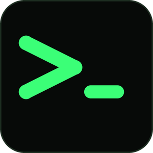
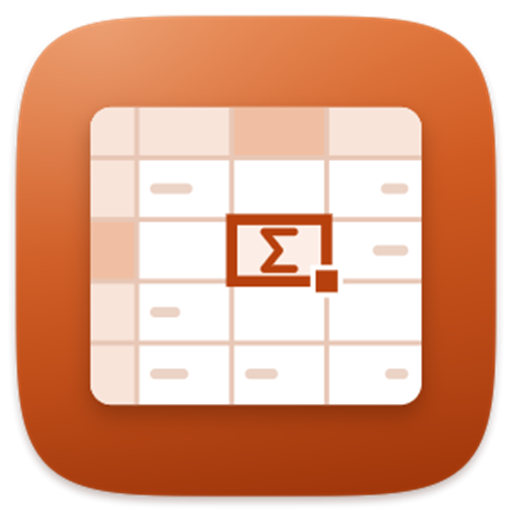

Продукты WebNet
Программы для бизнеса.
Полезные приложения WebNet для ежедневной работы. Выберите платформу — каталог будет пополняться новыми продуктами.
Для Windows
Работайте быстрее.
XTyping развивает скорость печати, а SheetX помогает работать с таблицами и Excel-файлами без интернета.

XTyping
Тренажёр печати с тестами на время, измеримой скоростью, статистикой и поддержкой собственных текстов и книг.

SheetX
Быстрый табличный редактор, совместимый с файлами и формулами Excel: 496 функций, сводные таблицы, диаграммы и условное форматирование. Работает без интернета и регистрации.
Приложения скоро появятся.
Мы готовим новые продукты WebNet для macOS.
Приложения скоро появятся.
Мы готовим новые продукты WebNet для iPhone и iPad.
Для Android
Не теряйте важное.
Notifix превращает уведомления устройства в удобный архив, к которому можно вернуться в любое время.
Расширения скоро появятся.
Мы готовим инструменты WebNet для работы прямо в браузере.
Web-приложения
Управляйте бизнесом в одной системе.
CRM369 объединяет продажи, внутренние процессы и коммуникации команды в общем рабочем пространстве.
Есть идея продукта?
Создадим приложение.
Спроектируем, разработаем и подготовим цифровой продукт к публикации.